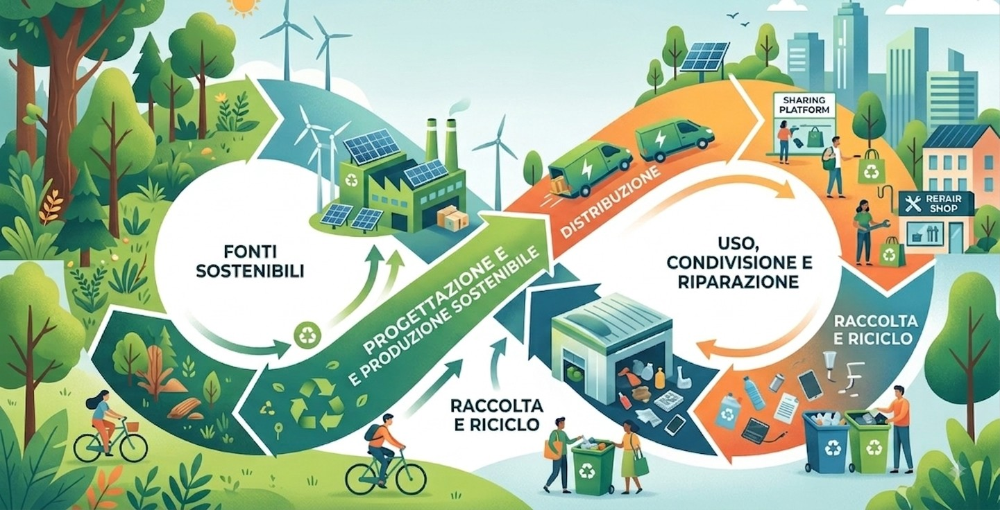
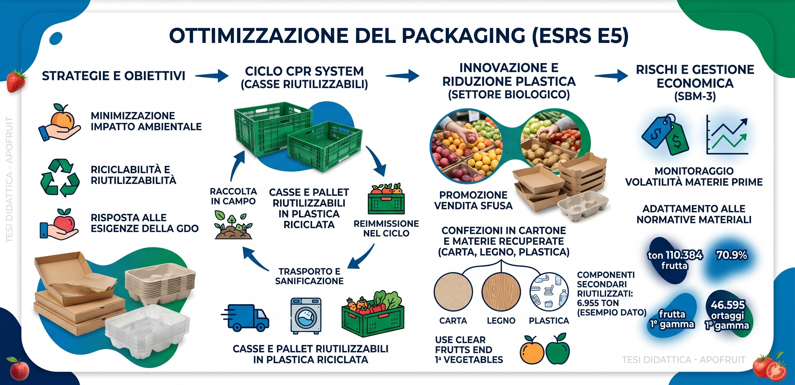
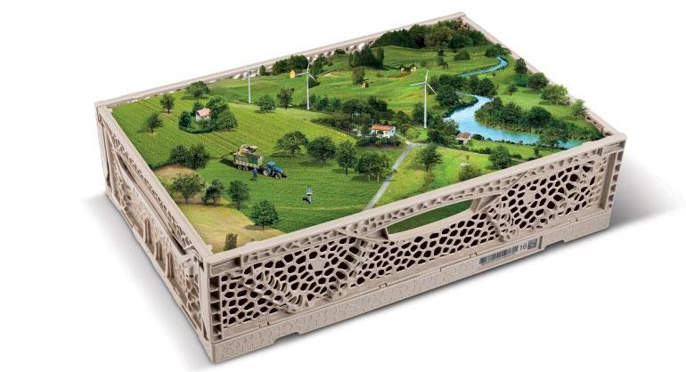
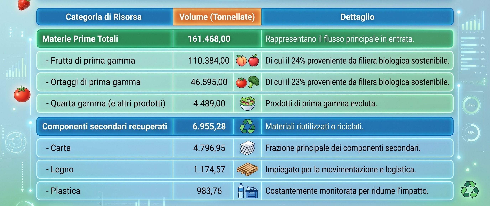

Economia circolare e gestione dei rifiuti
Apofruit riconosce l’importanza di un utilizzo più efficiente delle risorse e della riduzione degli sprechi come elementi centrali per migliorare la sostenibilità delle proprie attività. Pur non disponendo attualmente di una politica formalizzata, l'azienda ha avviato azioni concrete orientate all'economia circolare, concentrandosi specialmente sull'ottimizzazione del packaging e sulla gestione degli scarti.
Queste azioni non rispondono solo alle crescenti sfide ambientali, ma rappresentano una leva strategica per l’efficienza operativa e la competitività di Apofruit nel lungo periodo.
Ottimizzazione del Packaging e Sfide di Mercato
L'azienda privilegia l'impiego di imballaggi con un minor impatto ambientale (riciclabili o riutilizzabili). Questo approccio permette di:
- Far fronte alle pressanti richieste di materiali sostenibili provenienti dalla Grande Distribuzione Organizzata (GDO).
- Prepararsi proattivamente all'evoluzione del quadro normativo, in particolare all'introduzione, prevista per il 2030, di una direttiva settoriale specifica per il packaging ortofrutticolo mirata alla riduzione delle microplastiche.

Il modello circolare è promosso anche attraverso la gestione degli scarti: i sottoprodotti della lavorazione agricola sono frequentemente conferiti a biodigestori per la produzione di energia rinnovabile. Il tasso di recupero dei rifiuti raggiunge il 100%, supportato in maniera determinante dal circuito di imballaggi riutilizzabili (CPR System).
Tra i Rischi analizzati (SBM-3) figura la possibilità di un aumento imprevisto dei costi del packaging, che potrebbe derivare da fluttuazioni nei prezzi delle materie prime sul mercato globale o da nuove stringenti normative inerenti l'uso di specifici materiali.
Il Modello Circolare in Azione (E5-2)
Il modello circolare di Apofruit si sviluppa attraverso un ciclo virtuoso volto a minimizzare i rifiuti e valorizzare i materiali, supportato da partnership strategiche:
- Circuito riutilizzabile CPR System: Il tasso di recupero dei rifiuti raggiunge il 100% (con zero tonnellate di rifiuti destinati allo smaltimento diretto), supportato in maniera determinante dalla collaborazione con CPR System, di cui Apofruit è socio fondatore. Questo sistema impiega casse e pallet in plastica riciclata che vengono raccolti, sanificati e reimmessi nel ciclo produttivo.
- Valorizzazione degli scarti agricoli: I sottoprodotti e gli scarti derivanti dalla lavorazione agricola vengono frequentemente conferiti a biodigestori, contribuendo attivamente alla produzione di energia rinnovabile.
- Riduzione della plastica nel Biologico: Nel settore biologico, l'azienda privilegia la vendita assistita con prodotti sfusi e l'utilizzo di confezioni in cartone, riducendo l'uso di plastica a favore di soluzioni più ecologiche.

Impatti, Rischi e Opportunità (SBM-3)
Dall'analisi di materialità sono emersi rischi specifici legati alla gestione dei materiali, mentre non sono state mappate opportunità rilevanti in questo ambito:
- Fluttuazione dei costi: Rischio di un aumento imprevisto dei costi del packaging derivante dalle fluttuazioni dei prezzi delle materie prime sul mercato globale o da nuove stringenti normative sull'uso di specifici materiali.
- Costi di gestione: Rischio legato all'aumento dei costi di gestione per soddisfare le crescenti richieste di materiali sostenibili provenienti dai clienti e dagli attori del mercato.
Metriche e Flussi di Risorse: Dati 2024 (E5-4)
Nel corso del 2024, Apofruit ha monitorato rigorosamente i propri flussi di risorse. Il peso totale complessivo dei prodotti e dei materiali utilizzati è stato pari a 168.423,28 tonnellate
Di seguito il dettaglio dei principali flussi in entrata:
